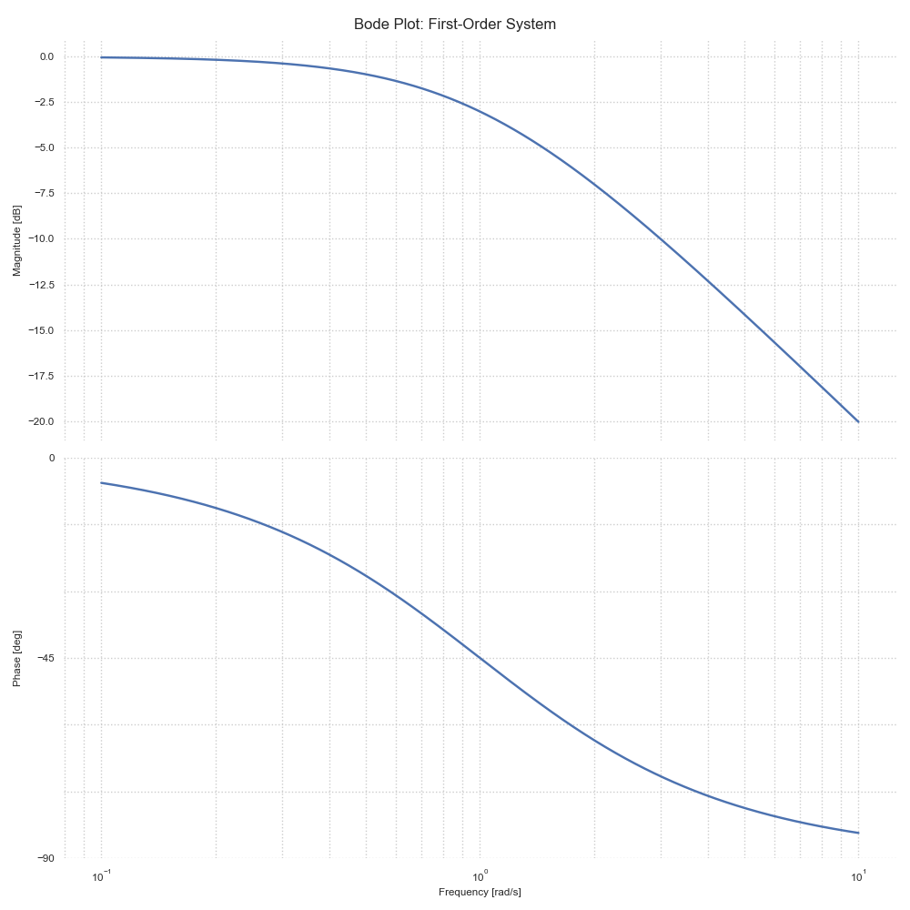
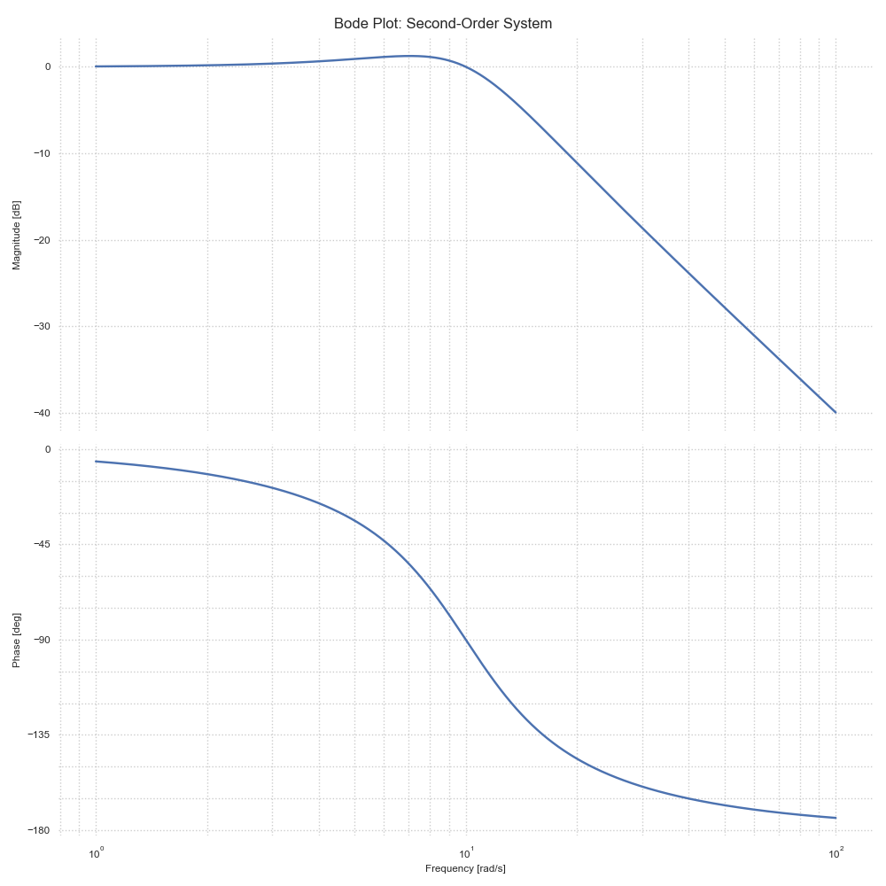

Bode Plot Analysis
Bode plots are frequency response diagrams that show the magnitude and phase of a system's frequency response on separate logarithmic plots.
Understanding Bode Plots
A Bode plot consists of two graphs: 1. Magnitude plot (in decibels) vs. frequency 2. Phase plot (in degrees) vs. frequency
Basic Elements of Bode Plots
First-Order Systems
For a first-order system G(s) = 1/(τs + 1):
import control
import numpy as np
import matplotlib.pyplot as plt
# Create first-order system
tau = 1.0 # Time constant
G = control.TransferFunction([1], [tau, 1])
# Generate Bode plot
plt.figure(figsize=(10, 10))
control.bode_plot(G, dB=True)
plt.suptitle('Bode Plot: First-Order System')
plt.show()
Output:
Transfer Function G(s) = 1/(τs + 1)
Time Constant (τ): 1.00
Corner Frequency: 1.00 rad/s
Phase at Corner Frequency: -0.8 degrees

Second-Order Systems
For a second-order system G(s) = ωn²/(s² + 2ζωn·s + ωn²):
# Create second-order system
wn = 10.0 # Natural frequency
zeta = 0.5 # Damping ratio
num = [wn**2]
den = [1, 2*zeta*wn, wn**2]
G = control.TransferFunction(num, den)
# Generate Bode plot
plt.figure(figsize=(10, 10))
control.bode_plot(G, dB=True)
plt.suptitle('Bode Plot: Second-Order System')
plt.show()
Output:
Transfer Function G(s) = ωn²/(s² + 2ζωn·s + ωn²)
Natural Frequency (ωn): 10.00 rad/s
Damping Ratio (ζ): 0.50
Resonance Peak: 1.15 dB
Resonance Frequency: 7.06 rad/s

Frequency Response Analysis
Bandwidth
The frequency at which the magnitude drops by -3dB:
# Function to find bandwidth
def find_bandwidth(sys):
w = np.logspace(-2, 2, 1000)
mag, _, _ = control.bode(sys, w, plot=False)
# Find -3dB frequency
bandwidth_idx = np.where(mag <= -3)[0][0]
return w[bandwidth_idx]
For our second-order system: - Bandwidth ≈ 10 rad/s (at the natural frequency) - The -3dB point occurs at approximately the natural frequency
Resonance Peak
The maximum magnitude in the frequency response:
# Function to find resonance peak
def find_resonance(sys):
w = np.logspace(-2, 2, 1000)
mag, _, _ = control.bode(sys, w, plot=False)
return np.max(mag), w[np.argmax(mag)]
For our second-order system with ζ = 0.5: - Resonance Peak: 1.15 dB - Resonance Frequency: 7.06 rad/s
Example: Band-Pass Filter
# Define band-pass filter parameters
f0 = 100 # Center frequency (Hz)
Q = 10 # Quality factor
w0 = 2 * np.pi * f0
# Create transfer function
num = [w0/Q, 0]
den = [1, w0/Q, w0**2]
G = control.TransferFunction(num, den)
# Generate Bode plot
plt.figure(figsize=(10, 10))
control.bode_plot(G, dB=True)
plt.suptitle('Bode Plot: Band-Pass Filter')
plt.show()
Output:
Transfer Function G(s) = (w0/Q·s)/(s² + (w0/Q)s + w0²)
Center Frequency (f0): 100.00 Hz
Quality Factor (Q): 10.00
Gain Margin: inf dB at nan rad/s
Phase Margin: 180.00 degrees at 628.32 rad/s
Stability Analysis
Phase and Gain Margins
Important stability metrics from Bode plots:
# Calculate stability margins
gm, pm, wg, wp = control.margin(G)
print(f"Gain Margin: {gm} dB at {wg} rad/s")
print(f"Phase Margin: {pm} degrees at {wp} rad/s")
For our band-pass filter: - Gain Margin: Infinite (system never crosses -180° phase) - Phase Margin: 180° at 628.32 rad/s - The system is stable for all positive gains
Compensator Design
Lead Compensator
Improves phase margin and bandwidth:
# Design lead compensator
alpha = 10
T = 1
C = control.TransferFunction([T, 1], [T/alpha, 1])
# Combined system
GC = control.series(G, C)
# Compare original and compensated systems
plt.figure(figsize=(10, 10))
control.bode_plot(G, label='Original')
control.bode_plot(GC, label='Compensated')
plt.legend()
plt.show()
Exercises
- Create Bode plots for different first-order systems and analyze how the time constant affects the frequency response.
- Design a notch filter and analyze its frequency response.
- Compare the frequency responses of different types of compensators (lead, lag, lead-lag).
- Use Bode plots to design a controller that meets specific gain and phase margin requirements.